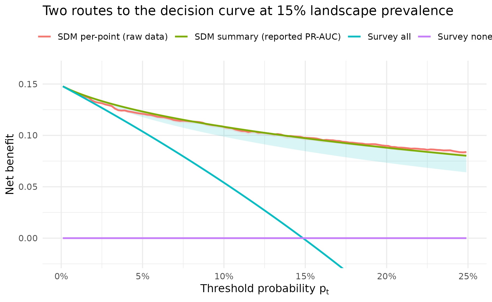

lsed evaluates a species-distribution prediction at the
landscape prevalence of the taxon, rather than at the (usually enriched)
prevalence of the test set. The package provides two routes to a
decision curve:
- a summary route, when all you have is a single reported number such as a PR-AUC and the prevalence it was measured at.
- an exact per-point route, if you have the held-out test set from the model.
This quickstart fits one model, a GLM using caret with
cross-validated spatial folds, with an area-of-applicability mask, both
from CAST. It then uses this model to fit DCA using both
methods 1 & 2. The toy landscape follows the virtual-species
convention of Grimmett et al. (2021).
library(lsed)
library(terra) ## raster surfaces
library(CAST) ## spatial CV / AOA
library(caret) ## modelling
library(sf) ## vector geometries
library(ggplot2) ## plotting
set.seed(1) ## reproducibilityA virtual species and a clustered survey
Five autocorrelated predictor layers; the species responds to only
the first three. We draw a single clustered survey as the training data,
and we fit the model on K = 5 covariates (the three real
ones plus two noise).
nx <- ny <- 80; P <- 12; K <- 5
# create sample raster template
r0 <- rast(
nrows = ny, ncols = nx,
xmin = 0, xmax = 1,
ymin = 0, ymax = 1,
# projected CRS, so CV can use planar distance
crs = "EPSG:3035"
)
xy <- xyFromCell(r0, 1:ncell(r0))
## make up some predictors.
smooth_field <- function(x, y, nh = 4, mf = 1.6) {
v <- numeric(length(x))
for (k in 1:nh)
v <- v + rnorm(1) * sin(
2 * pi * (runif(1, -mf, mf) * x +
runif(1, -mf, mf) * y) +
runif(1, 0, 2 * pi)
)
as.numeric(scale(v))
}
L <- sapply(1:P, function(j) smooth_field(xy[, 1], xy[, 2]))
# create raster surface.
env <- rast(r0, nlyr = P)
values(env) <- L
names(env) <- sprintf("v%02d", 1:P)
# true niche: depends on v01-v03 only
pres <- rbinom(nrow(L), 1,
plogis(-3.0 + 1.8 * L[, 1] - 1.4 * L[, 2] + 1.0 * L[, 3]
- 0.7 * L[, 1] * L[, 2]))
# TRUE landscape prevalence
pi_land <- mean(pres)
vars <- names(env)[1:K]
# sample data from a simulated clustered survey
# to make training data
n_tr <- 500; rad <- 0.22
sx <- pmin(pmax(0.5 + rnorm(n_tr, 0, rad), 0), 1)
sy <- pmin(pmax(0.5 + rnorm(n_tr, 0, rad), 0), 1)
tr_cells <- cellFromXY(env, cbind(sx, sy))
train <- as.data.frame(L[tr_cells, 1:K])
names(train) <- vars
train$pa <- factor(
ifelse(pres[tr_cells] == 1, "pres", "abs"),
levels = c("abs", "pres")
) # caret needs the outcome as a factor
round(pi_land, 3)
[1] 0.149The held-out evaluation set is built the way pseudo-absence test sets
usually are: enriched, here every held-out presence
plus three times as many absences. Its prevalence (~0.25) is far above
the landscape’s, one gap lsed corrects for.
pool <- setdiff(1:ncell(env), tr_cells)
pp <- pool[pres[pool] == 1]
pa <- pool[pres[pool] == 0]
ev_cells <- c(pp, sample(pa, 3 * length(pp))) # ~1:3 presence:absence
eval <- as.data.frame(L[ev_cells, 1:K]); names(eval) <- vars
y <- pres[ev_cells]
round(mean(y), 3) # enriched design prevalence
[1] 0.25Fit a GLM with spatial cross-validation, and its area of applicability
Because the survey is one spatial cluster, random cross-validation
folds would leak neighbours between train and test and flatter the
model. CAST::knndm() instead builds folds whose
train-to-test distances match the train-to-prediction distances across
the landscape, so the resampling reflects the real extrapolation the
model faces, and we pass those folds to caret::train().
The area of applicability is then built from the training presences only. As pseudo-absences, scattered across environments the taxon never occupies, would conflate the dissimilarity index. The mask is used to keep the evaluation points whose environments resemble occupied habitat, the ones where distinguishing presence from absence is actually hard.
# spatial folds: train-to-test distances matched to the prediction geography
tr_pts <- st_as_sf(
data.frame(
x = xy[tr_cells, 1],
y = xy[tr_cells, 2]
),
coords = c("x", "y"),
crs = "EPSG:3035"
)
# spatial folds: create spatial CV folds // these used for
# obtaining the AOA
folds <- knndm(tpoints = tr_pts, modeldomain = env, k = 5)
## fit a model using caret
m <- train(
x = train[vars], y = train$pa,
method = "glm", family = "binomial",
trControl = trainControl(
method = "cv",
index = folds$indx_train,
indexOut = folds$indx_test,
savePredictions = "final",
classProbs = TRUE
)
)
## predict the model onto the held out test data
## giving us the prredicted probalities to go along
## with the known preseence/ absences.
## note that caret produces a two column prediction (pres, abs)
# we only need the 'pres' column to score it.
prob <- predict(m, eval, type = "prob")[, "pres"]
# AOA from CAST, referenced on the TRAINING PRESENCES only
pres_rows <- train$pa == "pres"
aoa_r <- aoa(
newdata = env[[vars]],
train = train[pres_rows, vars],
verbose = FALSE
)
di <- terra::extract(aoa_r$DI, xy[ev_cells, ])[, 1]
in_aoa <- di <= aoa_r$parameters$threshold # keep interpolation points onlyScoring inside the area of applicability keeps the comparison honest. The model is judged in how it performs while interpolating in the portions of the landscape a user cares about detecting new occurrences in, and has the training data to model.
truth <- y[in_aoa]
pred <- prob[in_aoa]
pi0 <- mean(truth) # in-AOA (design) prevalenceThe reported metrics
This is the kind of scalar a user will find in most papers. Here it is scoped to just within the AOA, whereas most users will only have it across the landscape. The package supports both options.
Route 1 “summary”: from one reported number to a decision curve
Most users will probably only have a reported PR-AUC and the
prevalence it was measured at (this will probably be hidden in the
methods; or at worst shared code). ap_scalar_to_prev()
recovers the equal-variance binormal ROC that reproduces it, then
re-prices precision to the landscape prevalence;
nb_binormal() reads the best-achievable net benefit off
that ROC, and nb_binormal_band() turns an assumed spread in
the PR-AUC into a plausibility band.
reported <- pr_auc(truth, pred) # the reported scalar, at its design prevalence
pt <- seq(0.001, 0.25, by = 0.002) # threshold probabilities
rec <- ap_scalar_to_prev(reported, pi0 = pi0, pi_target = pi_land)
rec[c("mu", "implied_roc_auc", "ap_target")]
$mu
[1] 1.893501
$implied_roc_auc
[1] 0.9096996
$ap_target
[1] 0.7037962
nb_sum <- nb_binormal(rec$mu, pi_land, pt)
# plausibility band: map an assumed +/- 0.04 spread in the reported PR-AUC
# through to the curve (one-sided lower, the decision-relevant edge).
band_sum <- nb_binormal_band(reported, pi_land, pt, spread = 0.04, pi0 = pi0)Route 2 “per-point”: decision curve from raw data
With the model object itself we can calculate the decision-curve
analysis directly. First check calibration; because the predictions were
produced on the enriched sample, we shift them to the landscape
prevalence with recalibrate_to_prevalence() before
thresholding. nb_exact() is then the net benefit of
surveying every unit above each threshold, nb_exact_ci()
its bootstrap band, and nb_treat_all() the
survey-everything reference.
cox_calibration(truth, pred) # intercept, slope
cox_intercept cox_slope
0.4613659 1.1509441
pred_rc <- recalibrate_to_prevalence(pred, pi0, pi_land)
nb_pt <- nb_exact(truth, pred_rc, pi_land, pt)
# bootstrap band: one-sided lower 80% (the decision-relevant downside).
# RNGkind + seed make the parallel resampling reproducible.
RNGkind("L'Ecuyer-CMRG"); set.seed(1)
ci_pt <- nb_exact_ci(truth, pred_rc, pi_land, pt,
B = 999, level = 0.8, cores = 2)
nb_all <- nb_treat_all(pi_land, pt) # treat-none is identically 0DCA Curves
df <- rbind(
data.frame(
pt = pt, nb = nb_pt, lo = ci_pt$lower,
strat = "SDM per-point (raw data)"),
data.frame(
pt = pt, nb = nb_sum, lo = band_sum$lower,
strat = "SDM summary (reported PR-AUC)"),
data.frame(
pt = pt, nb = nb_all, lo = NA,
strat = "Survey all"),
data.frame(
pt = pt, nb = 0, lo = NA,
strat = "Survey none")
)
ggplot(df, aes(pt, nb, colour = strat)) +
geom_ribbon(data = subset(df, !is.na(lo)),
aes(ymin = lo, ymax = nb, fill = strat),
colour = NA, alpha = 0.15, show.legend = FALSE) +
geom_line(linewidth = 0.9) +
coord_cartesian(ylim = c(-0.02, pi_land * 1.1)) +
scale_x_continuous(labels = scales::percent) +
labs(
x = expression(Threshold ~ probability ~ p[t]),
y = "Net benefit",
colour = NULL,
title = sprintf(
"Two routes to the decision curve at %.0f%% landscape prevalence",
100 * pi_land
)
) +
theme_minimal(base_size = 12) +
theme(legend.position = "top")
Decision curve for the fitted SDM at the landscape prevalence, by both routes, with the survey-all / survey-none references. The shaded bands are the one-sided lower limits: the 80% bootstrap band (per-point) and the +/- 0.04 PR-AUC plausibility band (summary).
The curves nearly coincide, and both stay clear of surveying everything or nothing across the decision-relevant thresholds. The small gap between them is calibration: the summary route reads the best-achievable net benefit off the fitted ROC, while the per-point route reflects what the model’s probabilities actually deliver once re-priced to the landscape.
When you have the raw predictions, prefer the per-point route. It makes no distributional assumptions and carries a model-free bootstrap band. When all you have is a reported PR-AUC, the summary route recovers a defensible curve from that single number. Either way the evaluation is anchored to the landscape prevalence, not the test set’s.
What the bands mean
The two shaded bands answer different questions, and the package keeps them distinct.
The per-point band (nb_exact_ci()) is a
genuine sampling interval. It bootstraps the held-out points, resampling
presences and absences separately so the class counts, and
therefore the prevalence weights, stay fixed and only the within-class
positive rates vary. It is the uncertainty in what these
predictions deliver from a finite test set.
The summary band (nb_binormal_band())
is not a sampling interval: a single reported PR-AUC has no sampling
distribution attached to it. It is a plausibility band, a
sensitivity analysis that maps an assumed spread in the reported PR-AUC
(here ± 0.04) through the reconstruction and onto the curve. Calibrate
that spread from the scatter of replicate train/test splits when you
have them.
Both bands default to a one-sided lower edge, which
is what we draw here, because in a decision curve the operative question
is the downside: could the model be worse than simply surveying
everything, or nothing? An upper limit (available via
side = "both") changes no decision, so the lower edge is
the one worth showing.
Grimmett, L., Whitsed, R., & Horta, A. (2021). Presence-only species distribution models are sensitive to sample prevalence: Evaluating models using spatial prediction stability and accuracy metrics. Ecography, 44(9).